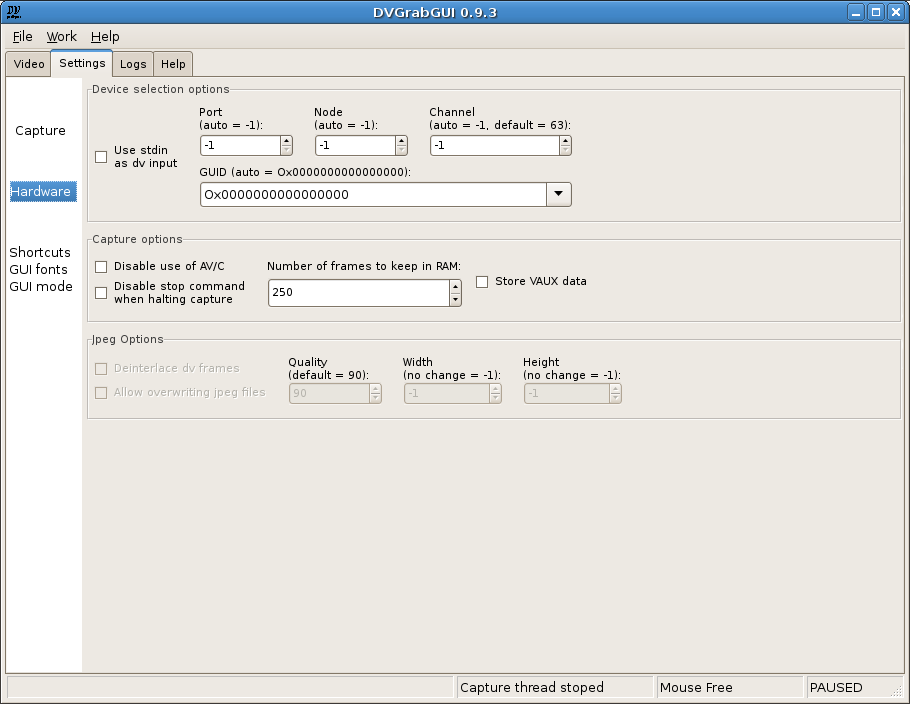

Prev: Reference → Settings → Capture --- ↑Home --- Next: Reference → Settings → GUI
DVGrabGUI 0.9.4
Reference → Settings → Hardware
This tab allows you to set more advanced options, mainly hardware ones.

-
Device selection options:
This box regroups the hardware source dv settings. You shouldn't have
to change these settings, unless using more than one dv sources.
-
Use stdin as dv input
If enabled, DVGrabGUI will try to capture a dv stream from the
standard input. Feature NOT tested! Note that when
enabled, the four others settings are not available.
-
Port
Set the firewire "port" used to search dv device. You should
leave it at "-1" to leave DVGrabGUI auto selects it.
-
Node
Set the firewire "node" used by the dv device. You should leave
it at "-1" to leave DVGrabGUI auto selects it.
-
Channel
Set the firewire "channel" over witch the dv connection will be
established. By default, it is over the "63" one. You should
leave it at "-1" to leave DVGrabGUI auto selects it.
-
GUID
Set the GUID (device identifier) of the firewire device to use as
dv source. If set to "0" ("Ox0000000000000000"),
DVGrabGUI will try to auto detect a dv source. You can also chose
one of the detected devices – DVGrabGUI tries to give
you the names of these devices… without any warranty! Or you can
enter yourself an hexadecimal GUID value (of type
"Ox00af56980000ce76" – other-formatted
values will fall back to default "zero" value!).
-
Capture options:
This box regroups various internal settings.
-
Disable use of AV/C
Do not use the abilities of controlling the camera from the PC
(not very useful for now).
-
Disable stop command when halting capture
Don't send stop command when halting dv recording. Only useful
when recording from tapes…
-
Number of frames to keep in RAM
The number of dv frames to cache in memory (1 frame = 144Ko).
-
Store VAUX data
Store the Video AUXiliary data of dv frames in an HTML file
(geek stuff – be careful, very big files very quickly!).
-
Jpeg Options:
This box regroups the jpeg recording settings, only available when the
"Jpeg" file format has been chosen.
-
Deinterlace dv frames
If enabled, the frames will be roughly deinterlaced before saved
as Jpeg files.
-
Allow overwriting jpeg files
If enabled, DVGrabGUI will overwrite the previously recorded jpeg
files; if not, it will add them (using higher frame numbers in
the file names…).
-
Quality
The Jpeg compression quality!
-
Width
The width of the saved images: DVGrabGUI will down/up-scale the
dv frames as needed (if "width" and following "height" don't give
the correct aspect ratio, it is "width" which will be modified!).
-
Height
The height of the saved images: DVGrabGUI will down/up-scale the
dv frames as needed ("height" is never modified, see above).
Prev: Reference → Settings → Capture --- ↑Home --- Next: Reference → Settings → GUI
(c) 2006, 2007, 2008 Bastien Montagne (montagne29 at wanadoo dot fr).
Project hosted at sourceforge.net/projects/dvgrabgui.